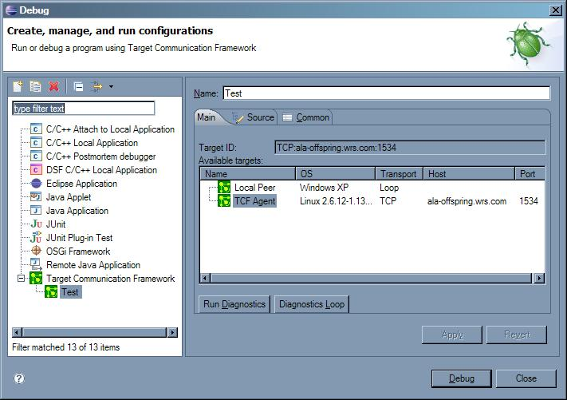
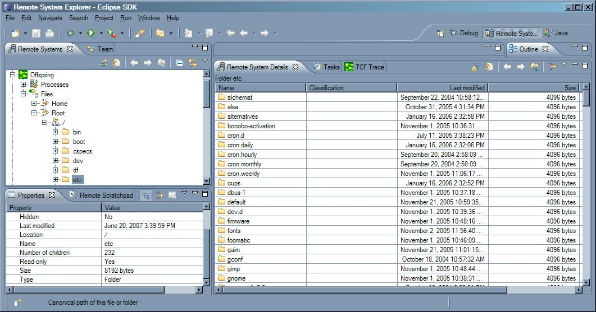

Today almost every device software development tool on the market has its own method of communication with target system. Communication methods often conflict with each other, require individual setup, configuration and maintenance, impose all kinds of unnecessary limitations. Target Communication Framework is designed to establish common ground in the area of communication protocols between development tools and embedded devices.
Target Communication Framework Specification is a document describing design goals, requirements and format of TCF communication protocol, as well as framework API and software design considerations.
TCF communication model is based on the idea of services. A service is a group of related commands, events and semantics. A service can be discovered, added or removed as a group at communication endpoint. Service definitions are not part of the framework specification, and new services are expected to be defined by developers of tools and target agents. However, standardization of common services is needed to achieve certain level of compatibility of tools/targets, see TCF Services Specification as starting point of this work.
Current reference implementation of TCF target agents is fully functional, can run on Windows, Linux and VxWorks. On Linux it is implemented using PTRACE, on VxWorks is uses vxdbgLib, on Windows it uses Debug API and dbghelp.dll. The agent provides the following services:
The agent code is designed to be easily extensible by adding new command handler implementations. The code separates machine dependences, common TCF logic and service implementations, which allows easy porting to a new OS or a target and reconfiguring of the agent for specific needs. The code is written in ANSI C. See TCF Linux Agent Prototype for more details about the agent code.
The prototype code connects Eclipse Debug Framework and Target Communication Framework. It allows to launch Eclipse debug session by connecting to a target running TCF agent, and then perform basic debugging tasks, like resuming, suspending, single-stepping, setting/removing breakpoints, etc.
The prototype launch configuration autodetects TCF targets on a local network and allows a user to connect to a target by simply selecting it from a list without a need for any further configuration or setup. TCF launch configuration dialog also offers controls to run a built-in diagnostics on a selecting target, which perform stress testing of communication channel, agent and target itself:

The prototype makes use of flexible debug model element hierarchy support, which is available in Eclipse debug framework since Eclipse 3.2. The flexible hierarchy allows debugger views to be "data driven" or, in other words, dynamically adapt to a given targets capabilities and structure, without a need to modify debugger code to support a new target.
Remote System Explorer is an Eclipse based component that allows users to create connections to remote machines and explore their file systems, see list of processes and access some other resources, like remote shells. Remote System Explorer has been designed as a flexible, extensible framework to which Eclipse plug-in developers can contribute their own system definitions, actions, etc.
The prototype enables use of Processes and Files subsystems of Remote System Explorer over TCF. It also extends Processes subsystem to include CPU utilization data and some other process attributes in RSE views:
